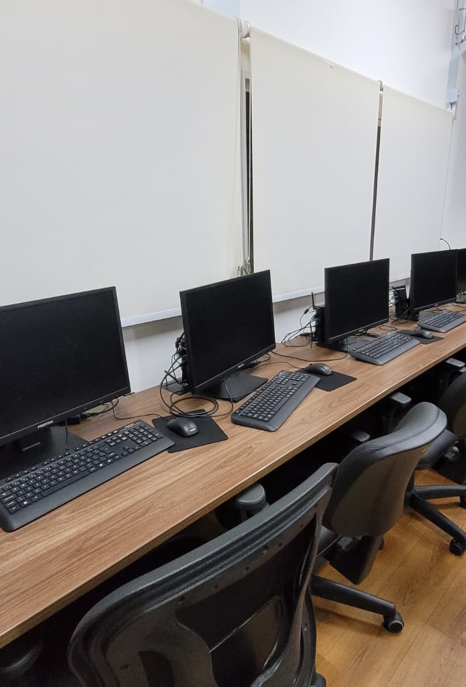

Computadores de Uso Discente OPERACIONAL
Categoria: Estações de trabalho para atividades didáticas, simulações e uso de sistemas logísticosIdentificação Patrimonial
| Código Interno | PCE001 a PCE020 |
|---|---|
| Quantidade | 20 unidades |
| Endereço Físico | SLS – bancadas do Laboratório de Sistemas Logísticos |
| Fornecedor | A confirmar |
Unidades identificadas:
1. Descrição e Finalidade
Os computadores de uso discente são estações de trabalho instaladas nas bancadas do Laboratório de Sistemas Logísticos e destinadas às atividades de ensino, pesquisa e extensão. O conjunto de 20 unidades permite a realização de aulas práticas com turmas completas, com uso de planilhas eletrônicas, softwares de simulação, sistemas de gestão e ferramentas de modelagem aplicadas à logística e à engenharia.
Cada máquina recebe um código individual (PCE001 a PCE020), afixado em etiqueta no gabinete, o que permite o registro de ocorrências e o acompanhamento da manutenção por unidade.

2. Especificações Técnicas
| Tipo | Computador desktop |
|---|---|
| Processador | Intel Core i5 ou equivalente |
| Memória RAM | 8 GB |
| Armazenamento | SSD |
| Sistema Operacional | Windows |
| Periféricos | Monitor, teclado e mouse USB |
| Conectividade | Rede cabeada institucional |
3. Guia Rápido de Operação
Checklist pré-uso:
- Verificar se monitor, teclado e mouse estão conectados e em bom estado;
- Conferir se a bancada está limpa e livre de líquidos ou alimentos;
- Confirmar com o professor quais softwares e arquivos serão utilizados na atividade;
- Ter em mãos o usuário e a senha institucionais.
Cuidados:
- Não consumir alimentos ou bebidas nas bancadas;
- Não instalar programas nem alterar configurações de rede, energia ou idioma;
- Não salvar arquivos na área de trabalho ou em pastas locais, pois a máquina pode ser restaurada sem aviso;
- Não desligar o computador pelo botão do gabinete, exceto em travamento total e com autorização do responsável;
- Comunicar ao professor ou ao técnico qualquer travamento, mensagem de erro ou dano físico.
Passo a passo:
- Ligar: acionar o botão do gabinete e o monitor; aguardar a tela de login.
- Acessar: entrar com usuário e senha institucionais.
- Desenvolver a atividade: abrir os softwares indicados pelo professor.
- Salvar: gravar os arquivos no repositório indicado pelo professor, em nuvem institucional ou em mídia pessoal.
- Encerrar: fechar todos os programas, sair da conta e desligar pelo menu Iniciar → Desligar.
4. Softwares Instalados
Escritório: editor de texto, planilha eletrônica e apresentações.
Navegação: navegador web para acesso aos sistemas institucionais e ambientes virtuais de aprendizagem.
Disciplinas: softwares de simulação, modelagem e desenho utilizados nas aulas do laboratório, conforme a imagem padrão definida pela TI do campus.
Novas instalações: solicitar ao responsável pelo laboratório com antecedência mínima de 5 dias úteis.
5. Normas de Segurança e Cuidados
EPIs necessários: não se aplica.
Quem pode operar: estudantes, professores e técnico de laboratório.
Restrições: uso exclusivo para atividades acadêmicas; proibido o uso de dispositivos USB de origem desconhecida.
Treinamento necessário:
- ☑️ Nenhum
- 🔲 Básico
- 🔲 Intermediário
- 🔲 Operação exclusiva do técnico
6. Manutenção e Conservação
Limpeza: com o equipamento desligado, limpar monitor, teclado e mouse com pano de microfibra seco ou levemente umedecido com álcool isopropílico. Nunca borrifar líquidos diretamente sobre os equipamentos.
Ventilação: manter as saídas de ar do gabinete desobstruídas e livres de poeira.
Cabos e conexões: verificar periodicamente o estado dos cabos de energia, rede e periféricos.
Falhas: registrar a ocorrência informando o código da máquina (PCExxx) e abrir chamado na TI do campus; sinalizar a unidade como "em manutenção" até o atendimento.
7. Checklist Pós-Uso
Antes de deixar a bancada, verifique:
- Arquivos salvos fora do computador (repositório, nuvem ou mídia pessoal);
- Programas encerrados e sessão de usuário finalizada;
- Computador desligado pelo menu Iniciar e monitor apagado;
- Pen drives e fones de ouvido retirados;
- Teclado, mouse e cadeira organizados;
- Anormalidades comunicadas ao professor ou ao técnico, com o código da máquina.